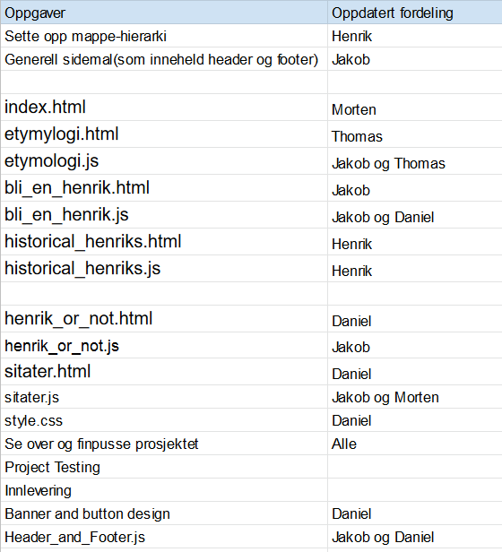

Nettsidens URL
Til forsiden: http://folk.ntnu.no/danielax/.
Endringer fra P2
Forsiden index.html
Vi valgte å plassere den informative teksten øverst på siden for at brukeren med en gang skal kunne forstå hva nettsiden handler om. Siden har også ikoner som linker til undersidene.
Header_and_Footer.js
Vi har lagt til en ekstra javascript-fil, Header_and_Footer.js, ettersom det er en mer modulær måte å håndtere delte html-elementer. Det er også en funksjon som endrer header når vinduet blir lite.
Etymologi
Etymologi-siden har blitt endret til en kolonne istedenfor to. Vi mener dette matchet resten av siden bedre. Vi droppet også en direkte liste over Henrik på ulike språk, ettersom det hadde vært mye repetisjon av teksten. Vi fikk også ikke inn uttalelser på absolutt alle språk, ettersom noen uttaler var vanskelig å finne. Istedenfor en liste, valgte vi at hvis du hovrer over ett Henrik-navn i teksten vil det spilles av en lydfil hvordan navnet uttales. Vi droppet også bilder av forskjellige “Henriker” på denne siden, fordi vi syntes den tok seg best ut uten. Og det hadde tatt vekk litt av meningen til “Historiske Henriker”. I konsollen vil det logges at den ikke kan spille av lyd før brukeren har gjort noe på nettsiden(for eksempel klikket), men dette tror vi ikke kan fikses.
Historiske Henriker
I motsetning til mockupen har nettsiden tekst øverst etterfulgt av et bilde. Det er ingen avsnitt under bildet. Det er også lagt til noen store, blå knapper for enklere navigering. Akkurat som i etymylogi.html har vi kun en kolonne, ettersom det ser mer minimalistisk ut. I tillegg la vi til en tips-boks som informerer om at piltaster kan brukes for navigering. Vi nevnte heller ikke at piltaster skal kunne brukes til navigering.
Bli en Henrik i dag
Hovedattraksjonen
Henrik or Not
Her brukte vi slideshow, med knapper for navigering under. På siste slide har vi en “henrik-kjenner”-knapp på siden av bildet, heller enn under som spesifisert i P2. Vi mente dette så mer elegant ut.
Sitat av Henrik
I P2 limte vi inn feil tekst i html-dokumentet under sitater. Det vi mente å skrive er:
«Denne siden vil gjennom et enkelt museklikk hente frem et tilfeldig, men likevel gripende, sitat kreditert til en historisk Henrik. Målet med denne siden er å inspirere brukerne våre, men også å gi dem et innblikk i den dype innsikten, endeløse vittigheten og mektige visdommen som har gått fra Henrik til Henrik gjennom historien.
Siden vil ha et enkelt og minimalistisk design. Når man ankommer vil siden bestå av en enkel bakgrunn, uten annet innhold enn en tekst hvor det står “Klikk for å bli Henrykt”. Klikker man hvor som helst på nettsiden bortsett fra header eller footer, vil HTML-en endres via javascript som velger et tilfeldig element fra en array og et sitat vil dukke opp på skjermen. Nettsiden vil ikke endre seg før brukeren trykker innenfor applikasjonsvinduet igjen for å hente frem et nytt, tilfeldig sitat.»
En endring er at du må klikke innenfor en boks, istedenfor alt utenom footer og header. Vi erstattet «klikk for å bli henrykt» med en tips-boks som informerer om å klikke innenfor boksen for å gå videre til neste sitat. Her vil det logges i konsollen at readystatehandler tok så og så mange millisekunder, som vi tror bare er på grunn av hvor vi har satt window.confirm i koden. Dette vil ikke bli et problem for brukeren.
Oppdatert mappestruktur
- index.html
- historiske_henriker.html
- etymologi.html
- bli_en_henrik.html
- sitater.html
- henrik_or_not.html
- css/
- style.css
- js/
- etymologi.js
- henrik_or_not.js
- bli_en_henrik.js
- sitater.js
- historiske_henriker.js
- Header_and_Footer.js
- media/
- images/
- henrik_or_not_images/
- historiske_henriker_images/
- logo.png
- favicon.png
- videos/
- sound_files/
- etymologi/
- hendrix.mp3
- images/
Javascript-krav
Jakob skrev javascript for Henrik_or_not. Dette er et slideshow med radiobuttons. Når en trykker på “henrik-kjenner?” trigges en funksjon som sammenligner alle svarene brukeren har trykket på med en fasit, og regner ut prosent rette svar. Resultat-teksten viser blant annet en bokstavkarakter basert på prosent rette svar. Får brukeren karakter “A” kommer det opp en link til “Bli en henrik”-siden, og trykker en på linken settes “henrik-type” i “bli en henrik” til “henrik-kjenner”.
Henrik skrev javascript for historiske_henriker. Dette er et slideshow som viser bilder og tekst. Piltaster eller knapper kan brukes til å vise neste eller forrige bilde.
Thomas og Jakob skrev javascript for etymologi. I etymologi vil en funksjon kalles hver gang noen hoverer over en uttale-måte av navnet Henrik. Gitt at det ikke allerede spilles lyd i nettleseren vil funksjonen spille av et lydklipp med uttalen.
I bli_en_henrik brukte Daniel og Jakob javascript for å validere et form. I tillegg vil submit-knappen lage en ferdig utfylt mail som kan sendes til Jakob. Url-en vil også sjekkes for parametre fra henrik or not, noe som kan oppdatere html-en.
Sitater ble skrevet av Morten og Jakob. I sitater har vi en array med sitater, og generer ett tilfeldig tall og bruker dette som indeks til å velge et tilfeldig sitat som vises til bruker.
Header and footer.js inneholder headeren og footeren for alle sider, samt en funksjon som blir kalt når brukeren trykker på meny-knappen når siden er i smal-modus. Funksjonen endrer klassenavn til menyen og knappene, og disse klassene er stylet separat i css, slik at de oppfører seg fint på mindre skjermer.
Oppdatert arbeidsfordeling
Arbeidsfordelingen er omtrent som i P2. Morten, Daniel og Thomas har fått javascript-oppgaver for at skulle få prøvd seg på javascript. Daniel fikk også ansvaret for å skrive sitater.html, grunnet sykdom.
Modularitet
Jakob laget Header_and_Footer.js, som legger til header og footer-elementene som er felles for alle sidene. Vi har separate Javascript filer ellers, siden hver side har individuelle behov.
Vi har en felles css-fil, style.css. Styling spesifikk for enkeltsider gjøres ved id og class- selectors til å kun endre det som er nødvendig.